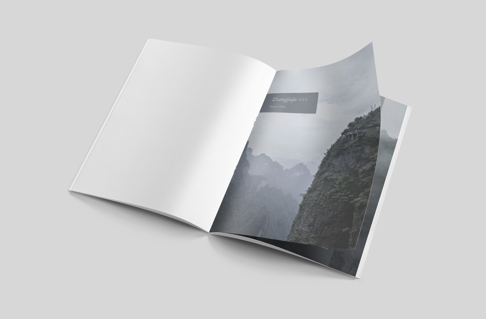
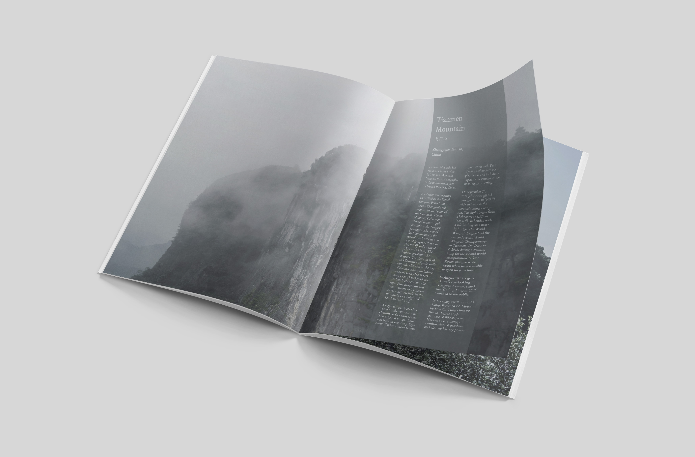
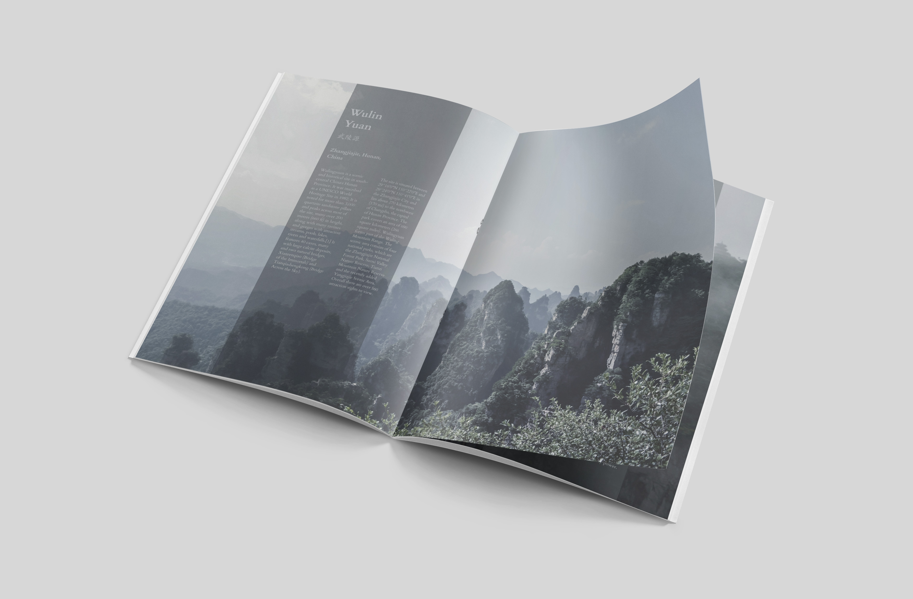
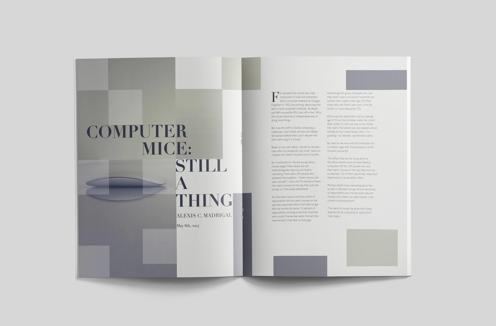

It's a personal project. Zhangjiajie is a city in China which has most the famous scenic parks such as Tianmen Mountain and Wulin Yuan. The appearance of the mountains is very special. Fog in the morning makes the areas more unique. I visited it in 2018 and took these pictures. I tended to emphasize the beautiful scenery and mysterious feel of Zhangjiajie, so the images take parts of the full page along with a simple solution of the text.
  It's a school project. I aimed to create a clean but also interesting layout based on the content. I chose a modern mouse to manifest that mice are still needed and are still developing constantly. The square gave a sense of digital and computer. Also, I meant to use the half-transparent squares to cover the mouse which manifests no matter how some people say about the mouse is not needed, mice are still there and are used every day by many people.
